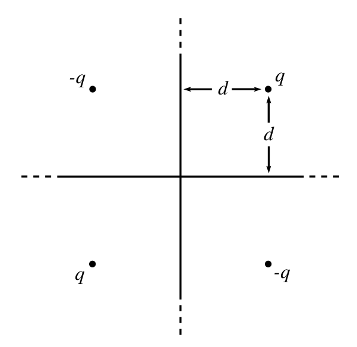
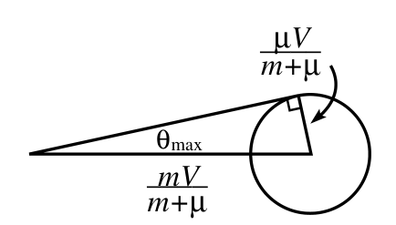

Boston Area Undergraduate Physics Competition, 2000년 4월 22일 — 풀이(SOLUTIONS)
$P$에서 막대 중심까지의 거리를 $x$라 하자. 질량중심(center of mass)에 대한 막대의 관성모멘트(moment of inertia)는 다음과 같다.
\[I_{\rm CM}=\int_{-L/2}^{L/2}x^2\,dm=\int_{-L/2}^{L/2}x^2\sigma\,dx=\frac{(\sigma L)L^2}{12}=\frac{ML^2}{12}.\tag{1}\]평행축 정리(parallel-axis theorem)를 쓰면, 점 $P$에 대한 관성모멘트는
\[I_P=\frac{ML^2}{12}+Mx^2.\tag{2}\]$P$에 대한 돌림힘(torque)은 질량중심에 실질적으로 작용하는 중력에 의한 것이다. 따라서 막대가 수평과 각 $\theta$를 이룰 때 돌림힘은 $\tau=Mgx\cos\theta$이다. 그러므로 $\tau=I_P\alpha$로부터
\[\alpha=\frac{Mgx\cos\theta}{\frac{ML^2}{12}+Mx^2}.\tag{3}\]막대는 $\cos\theta$의 계수가 최대일 때 가장 빨리 떨어진다. $x$에 대해 미분하면, $\alpha$는 다음일 때 최대가 된다.
\[x=\frac{L}{\sqrt{12}}.\tag{4}\]아래 그림과 같이 전하들이 정사각형을 이루도록 세 개의 영상 전하(image charge)를 추가한다. 네 전하 전체가 만드는 전기장이 두 평면에 수직이라는 것은 쉽게 알 수 있다. 이 전기장은 도체 평면이 요구하는 경계 조건(boundary condition)을 만족하므로, (유일성 정리(uniqueness theorem)에 의해) 실제 전하 $q$와 평면에 쌓이는 음전하들이 만드는 전기장과 같아야 한다.

전하계 전체의 퍼텐셜 에너지(potential energy)는
\[V_{\rm tot}=4\left(\frac{-q^2}{2d}\right)+2\left(\frac{q^2}{2\sqrt2\,d}\right).\tag{5}\]실제 전하 $q$와 평면에 쌓이는 음전하들의 퍼텐셜 에너지는 $V_{\rm tot}/4$이다. (이것은 전하계의 에너지가 전기장의 제곱의 적분과 같다는 점에 주목하면 알 수 있다. 그리고 실제 상황에서는 공간의 한 사분면에만 전기장이 존재한다.) 일 $W_{\rm in}$은 실제 전하계의 퍼텐셜 에너지와 같다. 따라서
\[W_{\rm in}=\frac{V_{\rm tot}}{4}=\frac{q^2}{d}\left(-\frac12+\frac{1}{4\sqrt2}\right),\tag{6}\]이며, 이는 당연히 그래야 하듯이 음수이다.
전하 $q$를 절연 평면으로부터 멀리 옮길 때, 전하는 마치 제자리에 고정된 세 영상 전하와 상호작용하는 것처럼 힘을 받는다. (이것이 성립하는 이유는, 오른쪽 위 사분면의 모든 점에서 영상 전하들에 의한 전기장이 절연판 위의 전하들에 의한 전기장과 정확히 같아야 하기 때문이다. 애초에 이 영상 전하들을 고른 이유가 바로 그것이다.)
따라서 일 $W_{\rm out}$은 주어진 전하를 세 영상 전하로부터 떼어 놓는 데 드는 일과 같다. 이 일은
\[\begin{aligned}W_{\rm out}&=2\left(\frac{q^2}{2d}\right)-\left(\frac{q^2}{2\sqrt2\,d}\right)\\&=\frac{q^2}{d}\left(1-\frac{1}{2\sqrt2}\right),\end{aligned}\tag{7}\]이며, 이는 당연히 그래야 하듯이 양수이다.
절연 평면 위 전하계의 퍼텐셜 에너지는 계에 해 준 전체 일과 같으며, 이는
\[W_{\rm in}+W_{\rm out}=\frac{q^2}{d}\left(\frac12-\frac{1}{4\sqrt2}\right),\tag{8}\]이고, 이는 당연히 그래야 하듯이 양수이다.
빛이 행성 둘레의 원형 경로를 따라갈 수 있는 조건은, 이 원형 경로가 근처의 모든 경로와 비교해 가장 짧은 시간이 걸리는 경로라는 것이다. (이것이 페르마의 최소 시간 원리(Fermat's principle of least time)이다.) 그러면 이 조건으로부터 근처의 원형 경로들도 (적어도 크기 차이의 1차까지는) 같은 시간이 걸린다는 것이 따라 나온다.
매질 속 빛의 속력은 굴절률(index of refraction)의 역수에 비례한다. 따라서 원형 경로가 존재할 조건은1
\[\frac{n(R+h)}{n(R)}=\frac{R}{R+h}.\tag{9}\]이를 $h$의 1차까지 전개하면 $R=-n/(dn/dh)$를 얻는다. 그런데 주어진 정보 $n=1+\epsilon\rho$에 따르면 $dn/dh=\epsilon\,d\rho/dh$이다. 따라서
\[R=-\frac{n}{\epsilon\,d\rho/dh}.\tag{10}\]그러므로 $d\rho/dh$를 구해야 한다. 이를 위해 세 가지 사실이 필요하다.
(a) 첫째는
\[\frac{d\rho}{dh}=\frac{\rho_E}{P_E}\frac{dP}{dh}.\tag{11}\]이것은 이상 기체 법칙(ideal gas law) $PV=nRT$에서 나온다. 양변을 $V$로 나누면 $P\propto\rho$를 얻는다. 행성 대기의 온도는 높이에 무관하므로 비례 상수도 높이에 무관하다. 그리고 온도가 지구 표면에서와 같으므로 $\rho/P=\rho_E/P_E$이고, 여기서 식 (11)이 나온다.
(b) 둘째는
\[\frac{dP}{dh}=-g\rho.\tag{12}\]이것은 (높이 $dh$, 밑넓이 $A$인) 작은 공기 기둥을 생각하는 통상적인 방법에서 나온다. 이 기둥에 작용하는 알짜 힘은 $-A(dP/dh)\,dh-(\rho A\,dh)g$이다. 이것을 0으로 놓으면 식 (12)를 얻는다.
(c) 셋째는
\[g=\frac{g_E}{R_E}R.\tag{13}\]이것은 정의 $g\equiv GM/R^2$와, 지구와 행성의 밀도가 같다는 가정에서 나온다. $M$을 밀도 곱하기 $4\pi R^3/3$으로 쓰면 $g\propto R$을 얻고, 여기서 식 (13)이 나온다.
이 세 가지 사실로부터
\[\frac{d\rho}{dh}=-\left(\frac{\rho_E}{P_E}\right)\left(\frac{g_E}{R_E}R\right)\rho.\tag{14}\]이를 식 (10)에 대입하면
\[R=\frac{nR_EP_E}{\epsilon g_E\rho_E\rho R}.\tag{15}\]$n=1+\epsilon\rho$를 쓰고, 또 $\rho=\rho_E$라는 가정을 쓴 다음 $R$에 대해 풀면
\[R=\sqrt{\frac{(1+\epsilon\rho_E)R_EP_E}{\epsilon g_E\rho_E^2}}.\tag{16}\]참고(Remark): 양 $\epsilon\rho_E$는 대략 $3\cdot10^{-4}$이다. 이 값(식 (16)의 분자에서 이 값의 효과는 무시할 만하다)과 함께 $R_E\approx6.4\cdot10^6\,$m, $g_E\approx10\,$m/s$^2$, $P_E\approx1\cdot10^5\,$kg/ms$^2$, $\rho_E\approx1.2\,$kg/m$^3$을 쓰면
\[R\approx1.3\cdot10^7\,{\rm m}\approx2R_E.\quad\blacksquare\tag{17}\]1 이 결과는 대기가 서로 다른 $n$을 가진 층들로 이루어져 있다고 보고, 어떤 한 층에서 전반사(total internal reflection)가 일어나야 한다는 조건을 요구해서 유도할 수도 있다.
$\mu\equiv M/N$을 반원 위 각 공의 질량이라 하자. 각 충돌에서의 편향각(deflection angle)이 $\theta=\pi/N$이 되기를 원한다. 그러나 비 $\mu/m$이 너무 작으면 이 편향각은 불가능하다. 이를 정량적으로 따져 보자.
보조정리(Lemma): 질량 $m$이 정지한 질량 $\mu$와 충돌하면, 최대 편향각은 다음으로 주어진다.
\[\sin\theta_{\rm max}=\frac{\mu}{m}.\tag{18}\]증명(Proof): 실험실 좌표계(lab frame)에서 질량 $m$의 처음 속력을 $V$라 하자. 그러면 질량중심 좌표계(CM frame)에서 $m$과 $\mu$는 다음 처음 속력으로 서로를 향해 다가온다는 것을 쉽게 알 수 있다.
\[v_m=\frac{\mu V}{m+\mu},\qquad\text{그리고}\qquad v_\mu=\frac{mV}{m+\mu}.\tag{19}\]충돌이 탄성 충돌(elastic collision)이므로, 이 속력들은 최종 운동 방향(물론 서로 반대 방향이다)과 상관없이 CM 좌표계에서의 최종 속력이기도 하다.
실험실 좌표계로 돌아가려면 각 입자에 옆방향 속력 $v_\mu=mV/(m+\mu)$를 더해야 한다. 따라서 실험실 좌표계에서 $m$의 최종 속도는 다음 벡터 합이다.
\[\mathbf V_f=\left(\frac{mV}{m+\mu}\right)\hat{\mathbf x}+\left(\frac{\mu V}{m+\mu}\right)\hat{\mathbf r},\tag{20}\]여기서 $\hat{\mathbf r}$은 CM 좌표계에서의 방향을 나타내는 단위 벡터이다. 실험실 좌표계에서의 편향각을 최대로 하려면, 분명히 아래 그림처럼 전체 속도 벡터가 원에 접하는 상황이어야 한다. 이 경우 $\sin\theta_{\rm max}=\mu/m$이며, 이것이 보이려던 것이다.2

(이 결과는 $\mu<m$일 때 성립한다. $\mu>m$이면 최대 편향각은 $180^\circ$이다.) $\blacksquare$
지금 문제에서는 $\theta=\pi/N$이다. $\theta$가 작으므로 $\sin\theta\approx\theta$를 써서 조건 $\sin\theta\le\mu/m$을 다음과 같이 쓸 수 있다.
\[\theta\le\frac{\mu}{m}\quad\Longrightarrow\quad\frac{\pi}{N}\le\frac{(M/N)}{m}\quad\Longrightarrow\quad\pi\le\frac{M}{m}.\tag{21}\]($m$이 주어졌을 때 $M$에 하한이 있어야 한다는 것은 분명하다. $M$이 매우 작으면 질량 $m$은 반원을 그냥 뚫고 지나가 버릴 것이기 때문이다.)
위 그림으로부터, 편향각이 최대인 경우 한 번 튕긴 뒤의 최종 속력은
\[V_f=V\frac{\sqrt{m^2-\mu^2}}{m+\mu}\approx V\left(1-\frac{\mu}{m}\right),\tag{22}\]이다(작은 양 $\mu/m$의 1차까지). 같은 논리가 모든 튕김에 적용되므로, 매번 튕길 때마다 속력은 $(1-\mu/m)$배로 줄어든다. $\mu/m=\pi/N$인 특별한 경우, 모든 공에서 $N$번 튕긴 뒤 $m$의 처음 속력에 대한 최종 속력의 비는
\[\frac{V_{\rm final}}{V_{\rm initial}}=\left(1-\frac{\pi}{N}\right)^N\approx e^{-\pi}.\tag{23}\]이보다 더 멋질 수는 없다! ($e^{-\pi}$는 대략 $1/23$이므로, 처음 속력의 약 4%만 남는다.)
2 충돌 과정에서 에너지 보존과 운동량 보존을 이용한 직접적인 (그러나 지루한) 계산으로도 이 결과를 유도할 수 있다. 그러면 (예컨대 $m$의 최종 속력에 대한) 해가 $\sin\theta\le\mu/m$일 때에만 존재함을 알게 될 것이다.
회전판(turntable)의 각속도(angular velocity)는 $\Omega\hat{\mathbf z}$이다. 공의 각속도를 $\boldsymbol\omega$라 하자. 공이 (실험실 좌표계에 대해) 위치 $\mathbf r$에 있다면, (실험실 좌표계에 대한) 공의 속도는 (위치 $\mathbf r$에서의) 회전판의 속도와 회전판에 대한 공의 상대 속도의 합으로 나눌 수 있다. 미끄러지지 않는 조건(non-slipping condition)에 따르면 이 상대 속도는 $\boldsymbol\omega\times(a\hat{\mathbf z})$로 주어진다. (구의 반지름을 “$a$”로 나타낸다.) 따라서 실험실 좌표계에 대한 공의 속도는
\[\mathbf v=(\Omega\hat{\mathbf z})\times\mathbf r+\boldsymbol\omega\times(a\hat{\mathbf z}).\tag{24}\]공의 각운동량(angular momentum)은
\[\mathbf L=I\boldsymbol\omega.\tag{25}\]바닥에서 오는 마찰력이 공의 운동량과 각운동량을 모두 변화시킨다. $\mathbf F=d\mathbf p/dt$로부터
\[\mathbf F=m\frac{d\mathbf v}{dt},\tag{26}\]그리고 (공의 중심에 대한) $\boldsymbol\tau=d\mathbf L/dt$로부터
\[(-a\hat{\mathbf z})\times\mathbf F=\frac{d\mathbf L}{dt},\tag{27}\]을 얻는다. 힘이 공의 중심에 대해 위치 $-a\hat{\mathbf z}$에 작용하기 때문이다.
이제 앞의 네 식을 이용해 공이 원운동을 한다는 것을 보이자. 목표는 $d\mathbf v/dt=\Omega'\hat{\mathbf z}\times\mathbf v$ 꼴의 식을 얻는 것이다. 이 식은 (앞으로 결정할) 진동수 $\Omega'$의 원운동을 나타내기 때문이다.
식 (25)와 (26)의 $\mathbf L$과 $\mathbf F$ 표현을 식 (27)에 대입하면
\[\begin{aligned}(-a\hat{\mathbf z})\times\left(m\frac{d\mathbf v}{dt}\right)&=I\frac{d\boldsymbol\omega}{dt}\\\Longrightarrow\quad\frac{d\boldsymbol\omega}{dt}&=-\left(\frac{am}{I}\right)\hat{\mathbf z}\times\frac{d\mathbf v}{dt}.\end{aligned}\tag{28}\]그다음 식 (24)를 미분하면
\[\begin{aligned}\frac{d\mathbf v}{dt}&=\Omega\hat{\mathbf z}\times\frac{d\mathbf r}{dt}+\frac{d\boldsymbol\omega}{dt}\times(a\hat{\mathbf z})\\&=\Omega\hat{\mathbf z}\times\mathbf v-\left(\left(\frac{am}{I}\right)\hat{\mathbf z}\times\frac{d\mathbf v}{dt}\right)\times(a\hat{\mathbf z}).\end{aligned}\tag{29}\]벡터 $d\mathbf v/dt$는 수평면에 놓여 있으므로, 오른쪽 항의 벡터곱(cross product)을 계산하는 것은 쉽다(또는 항등식 $(\mathbf A\times\mathbf B)\times\mathbf C=(\mathbf A\cdot\mathbf C)\mathbf B-(\mathbf B\cdot\mathbf C)\mathbf A$를 쓰면 된다). 그러면
\[\begin{aligned}\frac{d\mathbf v}{dt}&=\Omega\hat{\mathbf z}\times\mathbf v-\left(\frac{a^2m}{I}\right)\frac{d\mathbf v}{dt}\\\Longrightarrow\quad\frac{d\mathbf v}{dt}&=\left(\frac{\Omega}{1+(a^2m/I)}\right)\hat{\mathbf z}\times\mathbf v.\end{aligned}\tag{30}\]균일한 구에서는 $I=(2/5)ma^2$이므로
\[\frac{d\mathbf v}{dt}=\left(\frac27\Omega\right)\hat{\mathbf z}\times\mathbf v.\tag{31}\]따라서 공은 회전판 진동수의 $2/7$배인 진동수로 원운동을 한다. 이 진동수 결과는 초기 조건에 의존하지 않는다.
참고(Remarks): 식 (31)을 처음 시각부터 나중 시각까지 적분하면
\[\mathbf v-\mathbf v_0=\left(\frac27\Omega\right)\hat{\mathbf z}\times(\mathbf r-\mathbf r_0).\tag{32}\]이것은 좀 더 시사적인 꼴로 쓸 수 있다.
\[\mathbf v=\left(\frac27\Omega\right)\hat{\mathbf z}\times\left(\mathbf r-\left(\mathbf r_0+\frac{7}{2\Omega}(\hat{\mathbf z}\times\mathbf v_0)\right)\right).\tag{33}\]이 식은 중심이 다음 점에 있고
\[\mathbf r_c=\mathbf r_0+(7/2\Omega)(\hat{\mathbf z}\times\mathbf v_0),\tag{34}\]반지름이 $(7/2\Omega)|\hat{\mathbf z}\times\mathbf v_0|=7v_0/2\Omega$인 원운동을 나타낸다. (식 (33)은 $\mathbf v$가 항상 $\mathbf r-\mathbf r_c$에 수직이라는 것을 말하므로 실제로 원운동을 나타낸다. 따라서 점 $\mathbf r_c$까지의 거리는 변하지 않는다.)
고려할 만한 몇 가지 특별한 경우가 있다.
진동수 $(2/7)\Omega$가 $\Omega$의 유리수배라는 사실은, 공이 결국 회전판 위의 같은 점으로 돌아온다는 것을 의미한다. 실험실 좌표계에서 공은 회전판이 일곱 바퀴 도는 동안 원을 두 번 그린다. 그리고 회전판 위에 있는 사람의 관점에서는, 공이 원래 위치로 돌아오기 전에 다섯 번쯤 ‘나선을 그리며’ 돈다.
관성모멘트가 $I=\eta ma^2$인 공을 생각하면(균일한 구는 $\eta=2/5$), 위 결과의 “$2/7$”이 “$\eta/(1+\eta)$”로 바뀐다는 것을 쉽게 보일 수 있다. 공의 질량 대부분이 중심에 몰려 있으면($\eta\to0$), 원운동의 진동수는 0으로 가고 반지름은 $\infty$로 간다. $\blacksquare$
풀이를 (1) 진동의 진동수, (2) 한 번 진동할 때의 에너지 손실, (3) 시간에 따른 진폭의 계산으로 나누어 진행한다.
평형 위치에서는 용수철이 위로 당기는 힘이 공중에 있는 밧줄 부분에 작용하는 아래 방향 중력과 균형을 이룬다. 밧줄이 거리 $y$만큼(위쪽을 양으로) 움직이면, 용수철의 힘은 $-ky$만큼 변하고 중력은 $-(\sigma y)g$만큼 변한다. 따라서 알짜 힘은 $F=-(k+\sigma g)y$이다. 이 힘은 질량 $M=\sigma L$인 밧줄에 작용한다. 따라서 $F=ma$로부터 (공중에 있는 밧줄의 질량은 조금 변하지만, $F=ma$의 “$m$”을 다룰 때 이 효과는 무시할 만하다)
\[-(k+\sigma g)y=(\sigma L)\ddot y,\tag{35}\]이고, 따라서 진동의 진동수는
\[\omega=\sqrt{\frac{k+\sigma g}{\sigma L}}=\sqrt{\frac kM+\frac gL}.\tag{36}\]참고(Remarks): 진동수에 대한 흔한 오답은 $\omega=\sqrt{k/M}$이다. $g/L$ 항이 올바른 답에 반드시 들어가야 한다는 것은 $k\to0$인 극한을 생각해 보면 알 수 있다. (즉 매우 약한 용수철이 예컨대 1 km만큼 늘어나 있고, 그 끝에 예컨대 1 m 길이의 밧줄이 매달려 있는 경우이다.) 용수철의 힘은 거리에 따라 별로 변하지 않으므로 항상 실질적으로 $Mg=(L\sigma)g$의 힘으로 위로 당긴다. 밧줄이 거리 $y$만큼 움직이면 중력은 $-(L+y)\sigma g$가 된다. 따라서 알짜 힘은 $-(\sigma g)y$이다. 그러면 $F=ma$로부터 $-(\sigma g)y=(L\sigma)\ddot y$이다. 따라서 $\omega=\sqrt{g/L}$이며, 이는 (용수철의 힘이 무시할 만한 것이 아닌데도) $k$에 무관하다. 밧줄은 그 길이로 결정되는 진동수로 그저 위아래로 튈 것이다.
움직이는 밧줄 부분에 대한 정확한 운동 방정식을 써서 식 (36)의 진동수를 좀 더 엄밀하게 유도할 수 있다. 공중에 있는 밧줄의 길이를 $\ell\equiv L+y$라 하면, $F=dp/dt$로부터
\[F_{\rm net}=\frac{d}{dt}\Big((\ell\sigma)\dot\ell\Big)=\sigma\ell\ddot\ell+\sigma\dot\ell^2=\sigma(L+y)\ddot y+\sigma\dot y^2\tag{37}\](역주: 원문 식 (37)의 괄호 안 마지막 $\ell$에는 시간 미분의 점이 빠져 있으나, 뒤따르는 전개에 맞게 $\dot\ell$로 적었다.)
올라가는 동안 밧줄의 움직이는 부분에 작용하는 알짜 힘은 $F_{\rm net}=-(k+\sigma g)y$이므로, 식 (37)은 다음을 준다.
\[-(k+\sigma g)y=\sigma(L+y)\ddot y+\sigma\dot y^2.\tag{38}\]내려가는 동안 밧줄의 움직이는 부분에 작용하는 알짜 힘은 $F_{\rm net}=-(k+\sigma g)y+F_{\rm floor}$이며, 여기서 $F_{\rm floor}$는 바닥에 부딪히는 원자들을 정지시키기 위해 바닥이 가하는 힘이다. 질량은 비율 $\sigma|\dot y|$로, 속력 $|\dot y|$로 움직이면서 바닥에 부딪힌다. 따라서 이 원자들의 운동량 변화율(즉 $F_{\rm floor}$)은 $\sigma\dot y^2$이다. 그러면 식 (37)로부터
\[-(k+\sigma g)y=\sigma(L+y)\ddot y.\tag{39}\]작은 양 $y$의 1차까지, 식 (38)과 (39)는 모두 $m=\sigma L$로 근사적인 $F=ma$ 논리를 써서 유도한 식 (35)의 운동 방정식을 준다. $\blacksquare$
평형 위치에 대한 밧줄의 위치는 실질적으로 다음과 같다.
\[x(t)=A(t)\cos(\omega t).\tag{40}\]내려가는 운동 동안의 에너지 손실은 상당히 간단하다. 질량 $dm$인 밧줄 조각이 바닥에 부딪히면 운동 에너지(kinetic energy) $(1/2)(dm)v^2$을 잃는다. 짧은 시간 $dt$ 동안 $dm=|\sigma v\,dt|$이다. 따라서 손실은 $|(1/2)\sigma v^3\,dt|$이다. 식 (40)으로부터 $v(t)=-\omega A(t)\sin(\omega t)$이므로, 진동의 내려가는 절반 동안의 에너지 변화는
\[\Delta E_{\rm down}=-\frac12\int_0^{\pi/\omega}\sigma\omega^3A^3\sin^3(\omega t)\,dt.\tag{41}\]$\theta\equiv\omega t$로 놓고
\[\int_0^\pi\sin^3\theta\,d\theta=\int_0^\pi(1-\cos^2\theta)\sin\theta\,d\theta=\left(-\cos\theta+\frac{\cos^3\theta}{3}\right)\Big|_0^\pi=\frac43,\tag{42}\]을 쓰면 ($A$가 한 진동 동안 실질적으로 일정하다는 사실을 이용하여)
\[\Delta E_{\rm down}=-\frac23\sigma\omega^2A^3.\tag{43}\]올라가는 운동 동안의 에너지 손실은 조금 더 까다롭지만, 답은 내려가는 운동과 같은 것으로 드러난다. 질량 $dm$인 밧줄 조각이 움직이는 밧줄 부분에 갑자기 합류하면 피할 수 없는 에너지 손실이 생긴다. 이 손실은 다음과 같이 계산할 수 있다. 밧줄이 속력 $v$로 움직이는 순간 질량 $dm$이 밧줄에 합류한다고 하자. 그러면 이 질량은 운동 에너지 $(1/2)(dm)v^2$을 얻는다. 또 운동량 $dP=(dm)v$를 얻는다. 용수철이 이 질량을 이 속력까지 끌어올리는 데 하는 일은 $W=\int F\,dx=\int Fv\,dt$이다. 이 짧은 시간 동안 밧줄은 실질적으로 일정한 속력 $v$로 움직인다. 따라서
\[W=v\int F\,dt=v(dP)=(dm)v^2.\tag{44}\]그러므로 이 일의 절반은 질량의 운동 에너지가 되고, 절반은 열로 손실된다고 결론지을 수 있다. 따라서 열로의 손실은 $(1/2)(dm)v^2=(1/2)|\sigma v\,dt|v^2=|(1/2)\sigma v^3\,dt|$로, 내려가는 경우와 같다. 그러므로 한 번 진동할 때의 전체 에너지 변화는
\[\Delta E=\Delta E_{\rm down}+\Delta E_{\rm up}=-\frac43\sigma\omega^2A^3.\tag{45}\]참고(Remark): 원자가 밧줄의 움직이는 부분에 합류할 때 열 손실이 운동 에너지 증가와 같다는 사실은 매우 일반적인 결과이며, 움직이는 밧줄의 좌표계에서 보면 쉽게 이해할 수 있다. 이 좌표계에서 더미(heap) 속 질량 $dm$인 원자는 속력 $v$로 움직이다가 밧줄의 곧은 부분에 합류할 때 갑자기 정지한다. 따라서 밧줄 좌표계에서의 열 손실(실험실 좌표계에서의 열 손실과 같다)은 $(dm/2)v^2$이며, 이는 실험실 좌표계에서의 운동 에너지 증가와 같다. 이 일반적인 결과가 성립하는 근거는, 곧은 부분에 대한 더미의 속력이 더미에 대한 곧은 부분의 속력과 같다는 자명한 사실로 거슬러 올라간다. $\blacksquare$
(역주: 원문에서는 이 소제목이 앞 절과 같은 “Energy loss per oscillation”으로 잘못 반복되어 있으나, 내용은 처음에 예고한 (3) 시간에 따른 진폭의 계산이다.)
진폭이 $A$일 때 밧줄의 에너지는 $E=M\omega^2A^2/2$이므로 $dE=M\omega^2A\,dA$이다. 시간 $dt$ 동안의 진동 횟수는 $\omega\,dt/2\pi$이다. 따라서 식 (45)로부터 ($M\approx\sigma L$을 써서)
\[\begin{aligned}(\sigma L)\omega^2A\,dA&=-\left(\frac{\omega\,dt}{2\pi}\right)\left(\frac43\sigma\omega^2A^3\right)\\\Longrightarrow\quad\frac{dA}{A^2}&=-\left(\frac{2\omega}{3\pi L}\right)dt.\end{aligned}\tag{46}\]이것을 처음부터 시각 $t$까지 적분하고 $A(0)\equiv b$를 쓰면
\[A(t)=\frac{1}{\frac1b+\frac{2\omega t}{3\pi L}}.\tag{47}\]참고(Remark): $t$가 크면 이는 다음으로 줄어든다.
\[A(t)\approx\frac{3\pi L}{2\omega t},\tag{48}\]이는 처음 진폭 $b$에 무관하다. $1/t$ 거동은 $t\to\infty$일 때 밧줄이 움직이는 전체 거리가 간신히 무한대로 발산한다는 것을 뜻한다. 겪은 진동 횟수 $n=\omega t/2\pi$로 쓰면, 식 (48)은 다음과 같이 쓸 수 있다.
\[A(n)\approx\frac{3L}{4n}.\quad\blacksquare\tag{49}\]